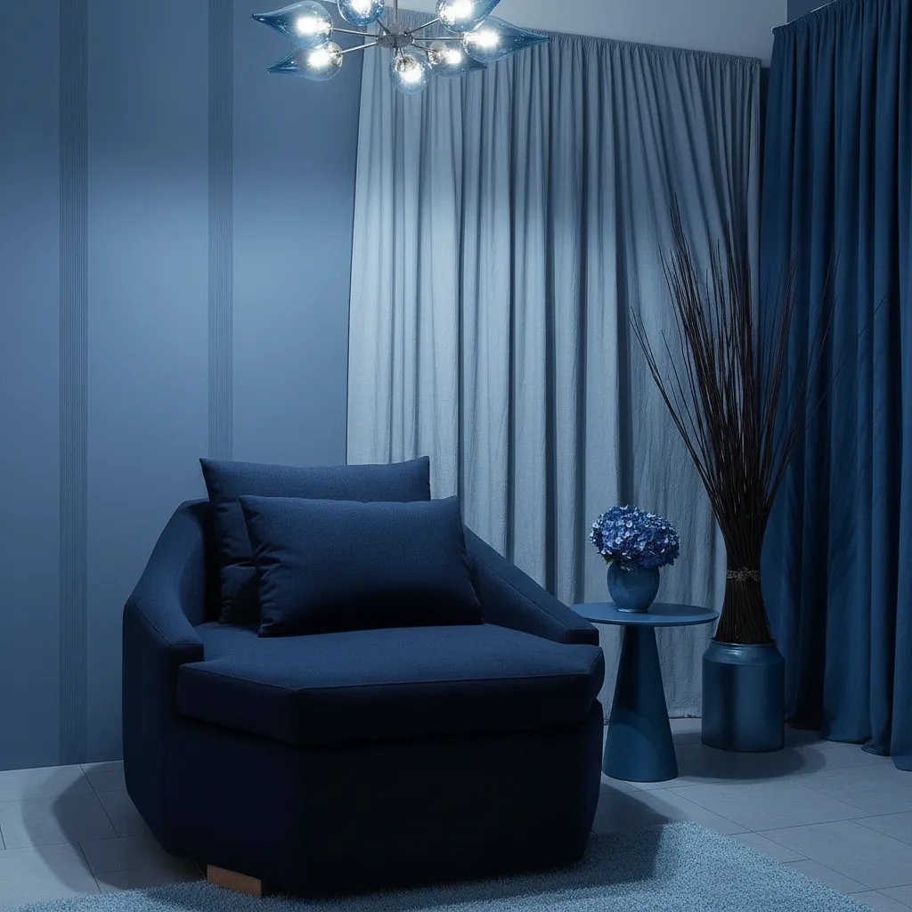
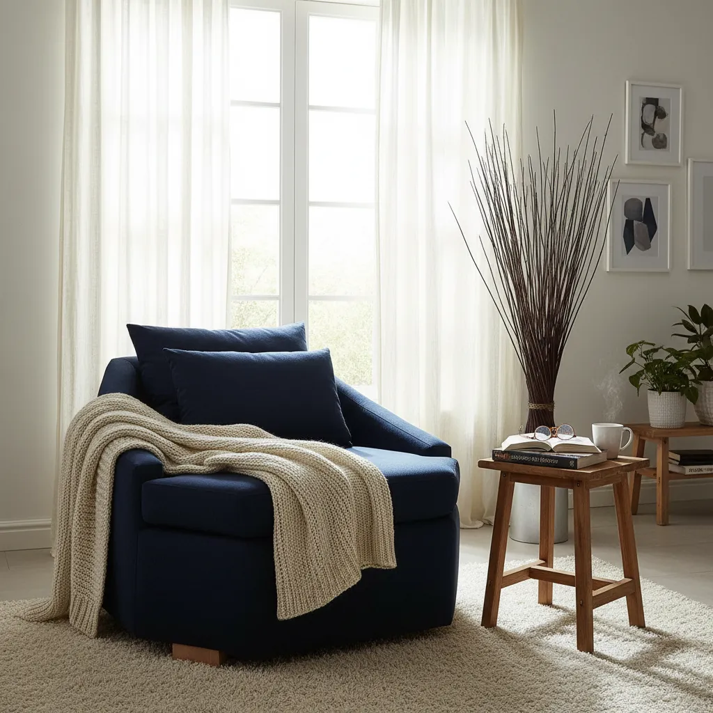
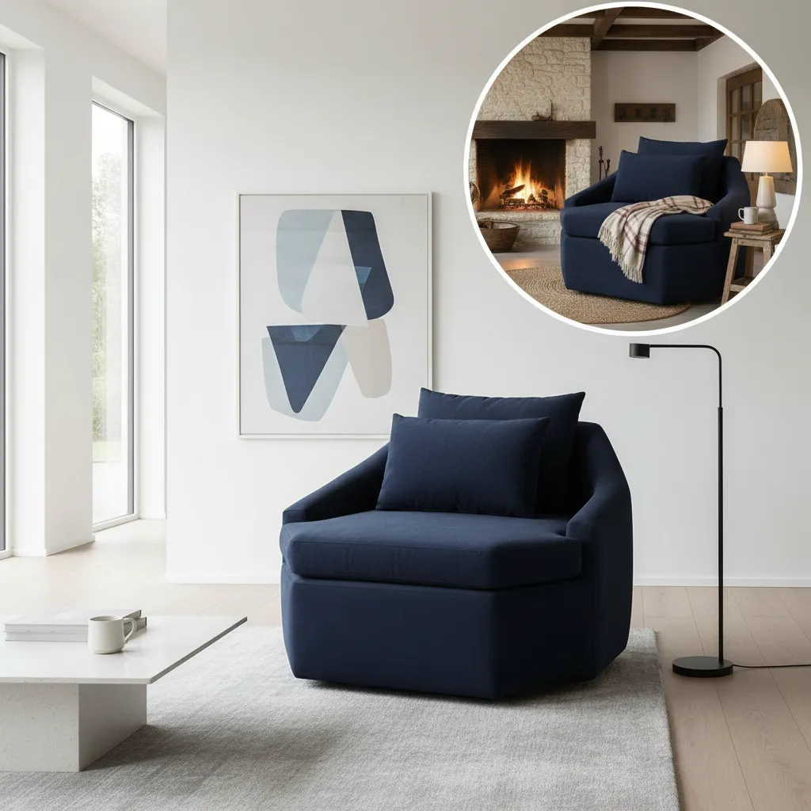

Sillón Octa® a Medida
Una pieza de diseño industrial de autor. La fusión entre la cultura urbana y el mobiliario contemporáneo de alta gama.
CONSULTAR POR WHATSAPP
Una pieza de diseño industrial de autor. La fusión entre la cultura urbana y el mobiliario contemporáneo de alta gama.
CONSULTAR POR WHATSAPP
Originalidad certificada. Una estructura geométrica única bajo un enfoque artesanal que garantiza una pieza de diseño diferencial.

Basado en una visión técnica que unifica mundos. Un objeto nacional que nace desde la identidad y la cultura productiva de Don Torcuato.

Ideal para entornos que buscan una estética industrial o de diseño contemporáneo. Una pieza con presencia capaz de definir el espacio.
Diseño de Autor • Mobiliario Industrial • Don Torcuato, Buenos Aires
© 2026 DECOGRI. MODELOS REGISTRADOS.